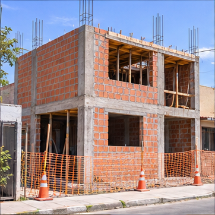

Resumen del proyecto
Orientación accesible para planificar mejoras y prevenir problemas.
INGENIERÍA / COMUNIDAD / PREVENCIÓN
VIVIENDAS / INGENIERÍA / FUTURO
Diagnóstico, orientación y acompañamiento para construir viviendas más seguras, duraderas y sostenibles.
01 / PREVENCIÓN 02 / ORIENTACIÓN 03 / SOSTENIBILIDAD

Orientación accesible para planificar mejoras y prevenir problemas.
Viviendas sin planificación, materiales deficientes y falta de asesoría.
Diagnóstico orientativo, guía de mejora y acompañamiento.
Objetivo propuesto, sin resultados medidos.
PLANIFICAR / MEJORAR / PREVENIR
Comparación conceptual: ilustra condiciones y mejoras propuestas. No representa una obra ejecutada ni resultados medidos.

⚠ Condiciones que requieren atenciónExposición a lluvia, sol y frío.
Elementos expuestos que requieren revisión profesional.
Falta de cerramientos y protección.
Humedad y deterioro prematuro.
Acumulación de barro y agua estancada.
Menor confort térmico y bienestar ambiental.
♧ Una visión de vivienda saludable y protegidaProtección frente a lluvia y sol.
Iluminación y ventilación natural.
Selección según normas y asesoría técnica.
Instalaciones eléctricas y sanitarias evaluadas.
Cerramientos para proteger a la familia.
Ambientes funcionales y habitables.
Manejo adecuado del agua y humedad.
Vegetación apropiada al lugar.
Su cumplimiento requiere diseño, ejecución y evaluación profesional.